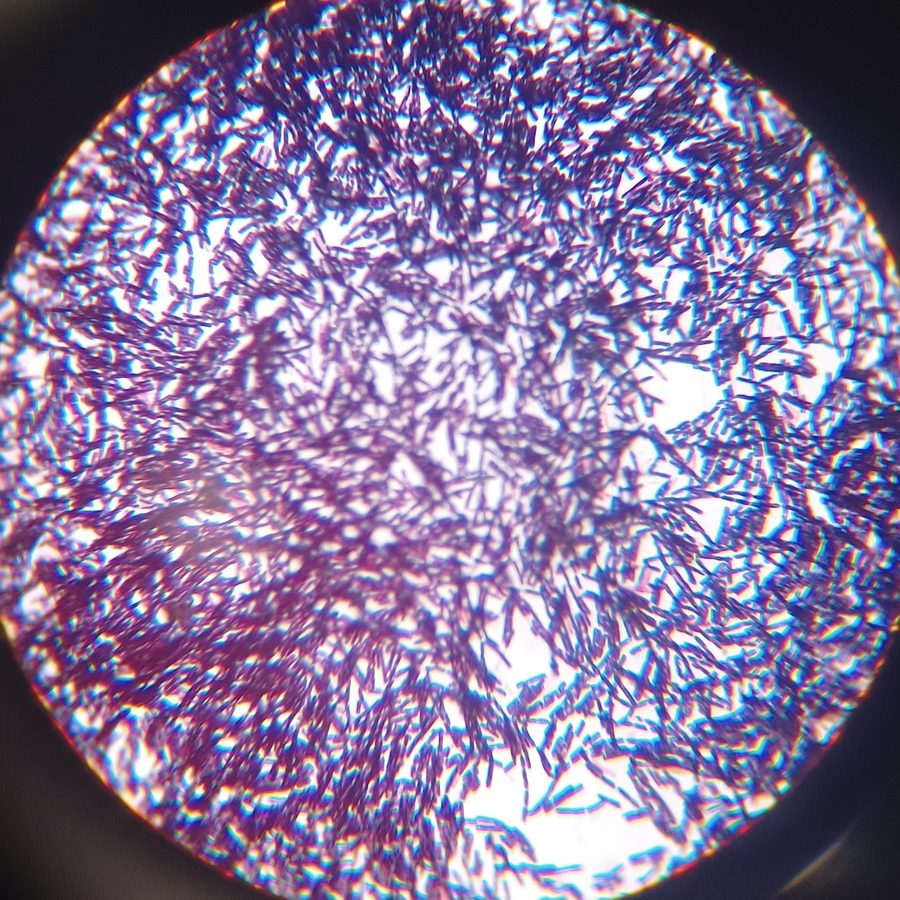

Honours thesis
In progress, due 2027
A summary of my research question and approach will be added here.
Biomedical engineering and biotechnology student at Swinburne, with five years working inside Victorian hospitals.

I'm completing a Biomedical Engineering and Biotechnology (Honours) degree at Swinburne University of Technology, graduating in 2027.
Alongside my studies I've worked in hospitals since 2021, from COVID-19 testing and vaccination clinics to Emergency Department ward clerk, infection prevention administration, and a ward clerk role at Epworth HealthCare. Working across public and private hospitals has shown me how differently health systems can be designed, and how much those design choices affect the people using them every day.
Along the way I've built my own tools to fix problems I saw on the job. I'm interested in clinical engineering, health technology and medical devices, especially where good design meets real clinical workflows.
Outside engineering, I'm studying philosophy (currently logic) and Latin, which turns out to be very useful for reading scientific names.
Ward Clerk Jan 2026 to Mar 2026
Infection Prevention & Control Administrative Support Sept 2024 to present
Emergency Department Ward Clerk June 2023 to present
Vaccination Clinic Ward Clerk June 2021 to Dec 2022
COVID-19 Testing Clinic Assistant and Screening Jan 2021 to June 2022
In progress, due 2027
A summary of my research question and approach will be added here.
Planned for summer
Python code that finds, counts and measures the rod-shaped bacteria in the Gram stain image at the top of this page, plus an explainer video on how it works.
Planned for summer
A Python model of patient arrivals, triage and bed flow, built on what I've seen working as an ED ward clerk.
Planned for summer
An ECG or EMG sensor built with a microcontroller, with signal filtering and heartbeat detection in Python.
Through Basic to Brilliant, I explain science and engineering for people without a technical background, through video, podcast and writing.